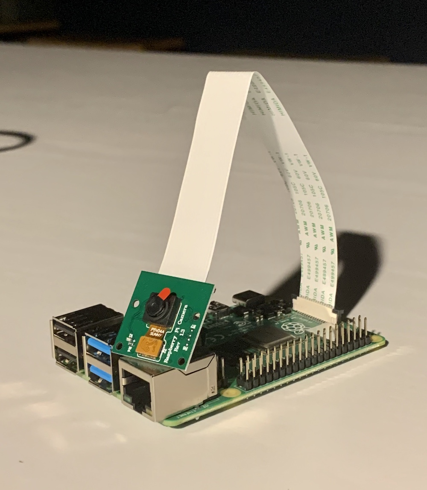

background mathmatical modeling physical model how-to

우리집에는 이런 장난감이 있다.
난 이 로봇들을 실제로 만들어 보고자 한다. 그런데, OpenCV로 탁구공을 찾아 따라가는 코드를 처리하려면 아두이노만으로는 안된다. 집에 있는 장난감 '라즈베리파이'를 함께 사용할 계획이다.
original image source: devicemart.co.kr
라즈베리파이가 영상 인식과 경로 명령을, 아두이노가 모터 구동을 담당한다. 그리고 아두이노에는 가속도 센서가 들어 있어 벽에 부딪힌 것을 감지할 수 있다. wifi 통신이 내장되어 있어 무선으로도 제어가 가능하다.
지금 박종한의 부엌
어떤 결과가 나오고 어떤 데이터가 모일 지 너무 궁금하다. 당장 해보고 싶다. 난 요즘 데이터 분석에 빠졌다.